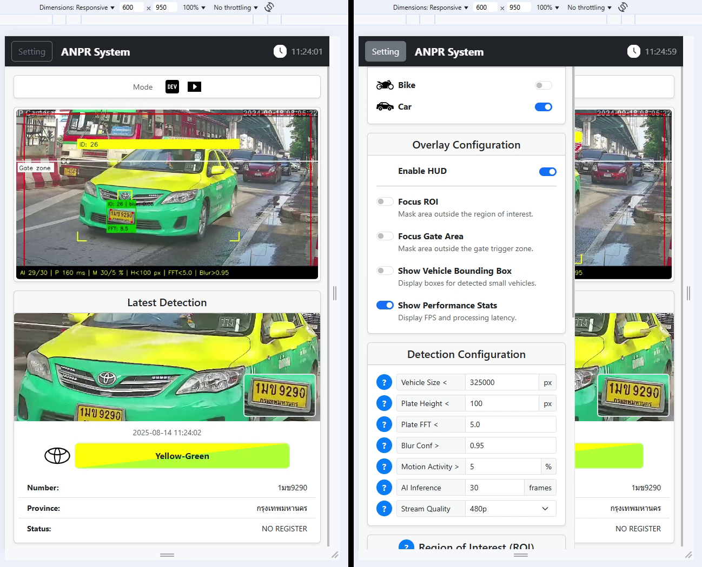
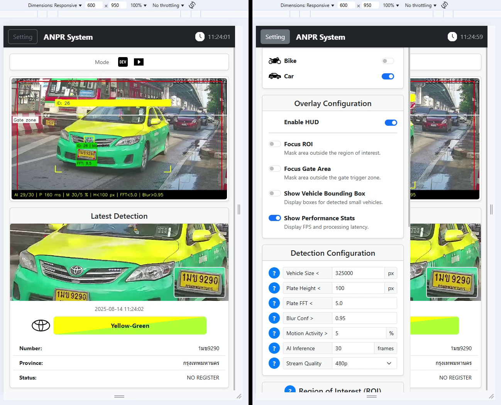
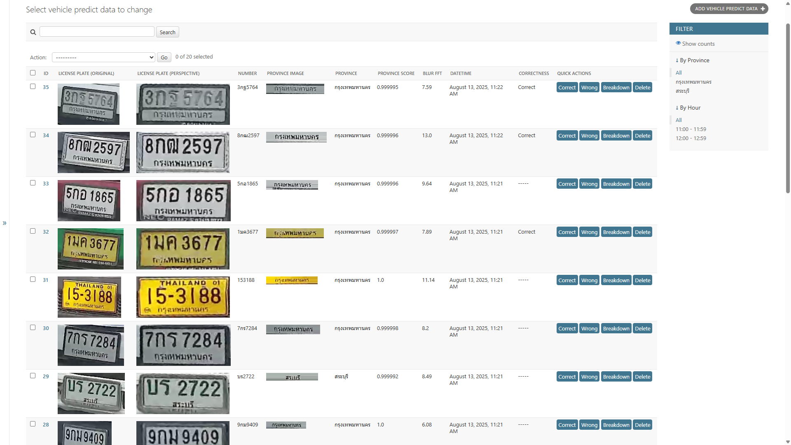
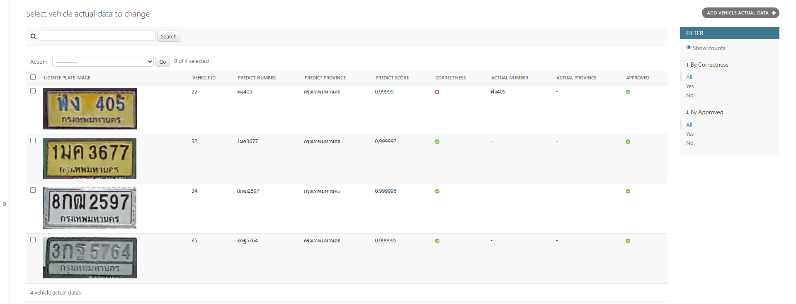
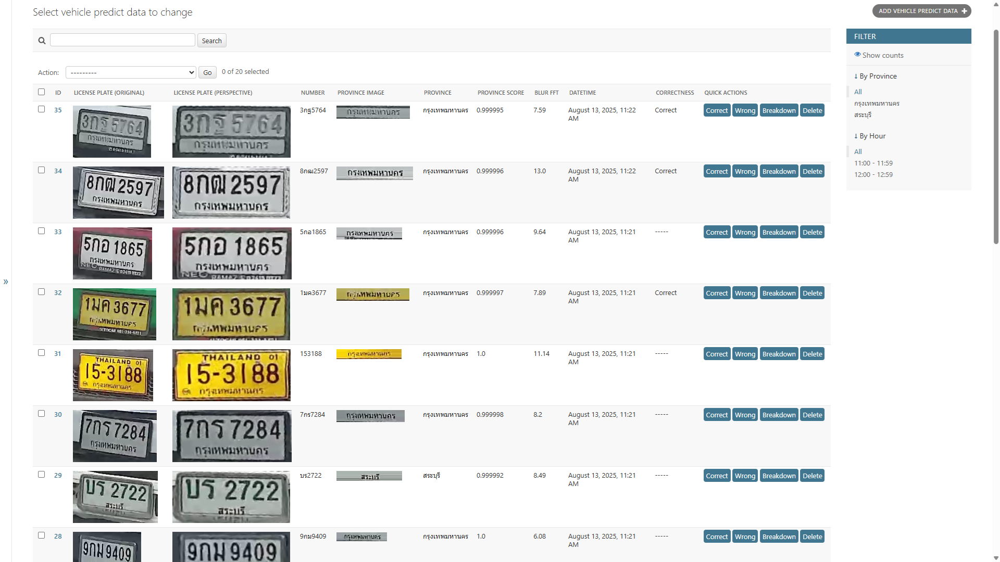
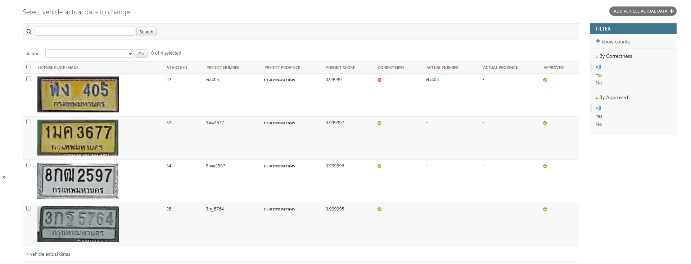
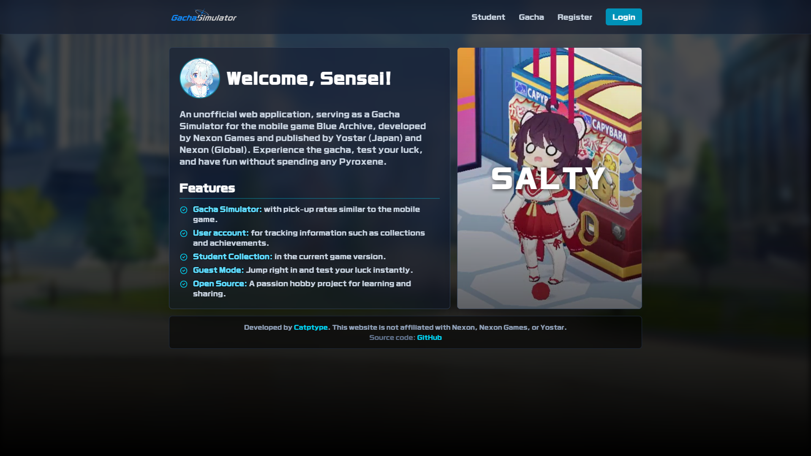
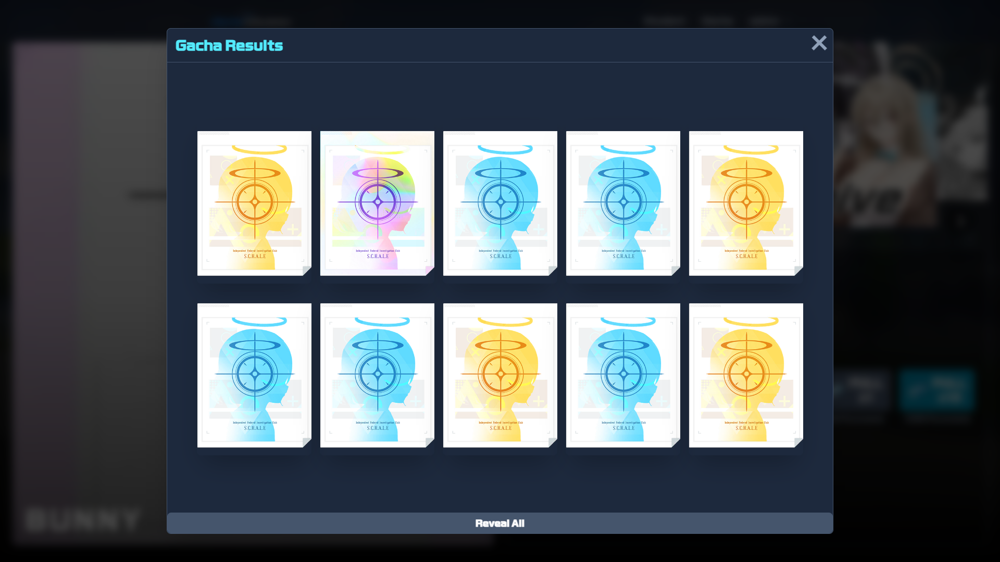
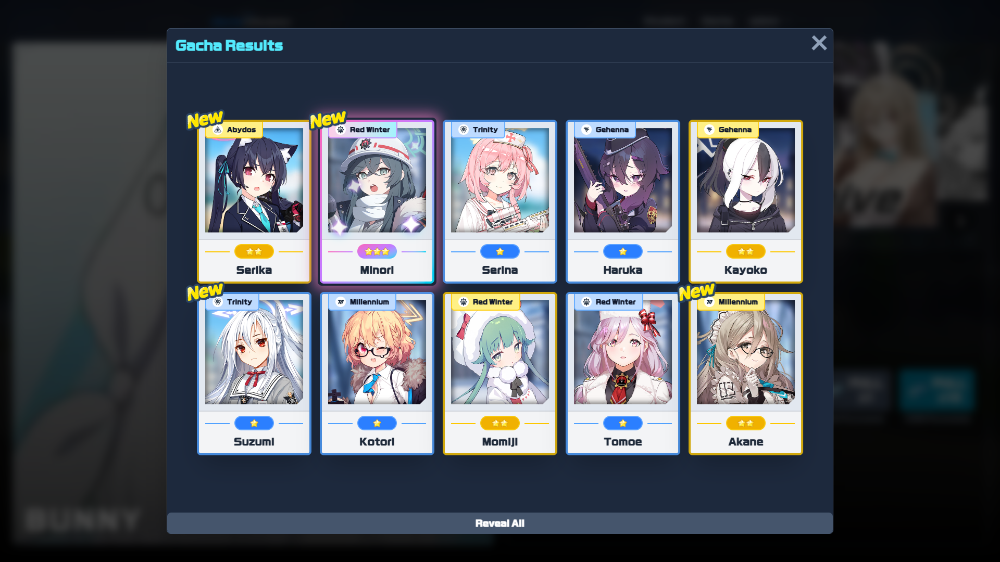
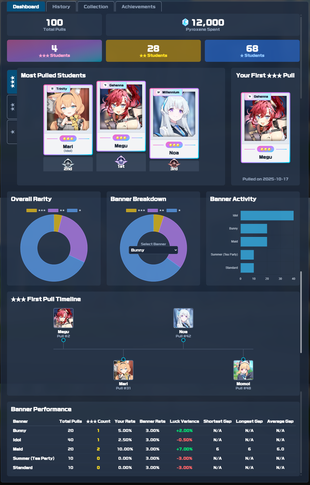

Computer Vision &
Full‑Stack Engineer
About Me
I am an AI and Full-Stack Engineer who bridges the gap between deep learning models and real-world applications. My 7+ years of experience are rooted in a deep understanding of classic image signal processing, giving me a unique perspective on the AI models I now build with modern frameworks. This foundational knowledge is my key differentiator.
My expertise in full-stack development complements my AI skills, enabling me to own the entire project lifecycle. I don't just build models; I build complete, robust, and deployable solutions from concept to completion.
Technical Skills
AI & Computer Vision
Web Development
Languages
Database & Caching
Infrastructure & Tools
Deployment & CI/CD
Development Tools
Gray cards denote prior experience.
Showcase
Click an image to view full size.
 

 



Real‑time Vehicle Detection & License Plate Recognition System
During my role at company, I was the sole developer tasked with designing, building, and deploying the Automatic Number Plate Recognition (ANPR) system from the ground up. I was responsible for the entire project lifecycle, from initial data collection to its final integration as the core technology for a commercial security product. The system performs real‑time vehicle analysis and Thai license plate recognition from live CCTV feeds.
My Role & Responsibilities:
- AI Development: Solved the data scarcity problem by building a custom dataset and training YOLO models for vehicle detection, classification, and OCR.
- Full-Stack Engineering: Architected and developed the complete application, including a high-performance multi-threaded Python backend and a responsive Django-powered web UI.
- End-to-End Deployment: Managed deployment across different environments, from an optimized edge prototype on a Raspberry Pi 5 to a containerized production build for Linux servers.
- CI/CD & Infrastructure: Established a GitLab CI/CD pipeline for automated Docker image builds and configured Nginx as a reverse proxy for pre-production testing.
Key Features & Architecture:
- Integrated Data Labeling Workflow: To enable continuous model improvement, I built a "Dataset Mode" and a web UI to review, correct, and validate predictions, creating a powerful feedback loop for retraining.
-
High-Performance Multi-Threading: The backend pipeline is fully concurrent to ensure real-time performance without bottlenecks.
1. Video Capture (RTSP)2. AI Inference & Processing3. Real‑time Result Broadcasting (WebSockets)4. System Health Monitoring (WebSockets)
- Commercial Integration: The final application was architected for a dual role: providing a staff-only UI for configuration and serving detection data to the central Venus Sentinel platform via a REST API to control automated gate barriers.
Tech Stack
Key Concepts & Techniques
Deployment & Infrastructure
Pill Identification System
During my employment, I was the core developer for this real-time Pill Identification system, which was successfully demonstrated at two public technology events. I was responsible for the entire technical execution, from creating a custom dataset to building the full-stack architecture and the core AI engine capable of identifying diverse medicine forms—including tablets, capsules, boxes, blisters, and vials.
My Role & Responsibilities:
- Custom Dataset Curation: With no public dataset available, I single-handedly photographed, processed, and labeled a comprehensive custom dataset, which formed the foundation of the AI's accuracy.
- AI Engine Development: Developed the core computer vision engine using YOLO (Ultralytics) to detect and classify all specified medicine forms, from simple pills to complex packaging.
- Full-Stack System Architecture: Designed the end-to-end system and built a robust Django backend, including a functional frontend UI for crucial debugging and visual validation of the AI engine.
- API Integration for Mobile: Engineered and provided a real-time WebSocket API to the mobile development team, enabling seamless integration into the production application.
Key Features & Architecture:
- Multi-Form Identification: The core feature of the system is its ability to identify medicine in various forms including tablets, capsules, boxes, blisters, ampoules, and vials.
- Fine-Grained Recognition: The system can distinguish between medicines with nearly identical visual appearances—a task that is challenging for the human eye.
- Robustness to Challenges: Accurately identifies pills even in difficult scenarios, such as when a package contains a non-uniform mix of pills or includes broken tablets.
- Standardized Identification: Utilizes the official Thai Medicines Terminology (TMT) number as a unique identifier, linking every identification to a national standard.
Tech Stack
Key Concepts & Techniques
Click an image to view full size.
YOLO Inference Toolkit
I developed this open-source toolkit to solve a common problem for AI developers: the repetitive setup code and complexity of using the powerful Ultralytics YOLO framework. To simplify this, I built a set of intuitive, object-oriented Python classes that provide a clean and consistent workflow for every task. This lets developers get useful, ready-to-use data with a simple predict-then-decode process. The goal is to help developers move from idea to implementation much faster by focusing on their application, not the framework's internal details.
Project Goals & Design Philosophy:
- Simplify Developer Experience: Abstract away complex framework internals and provide a simple, intuitive API for common AI tasks.
- Promote Code Reusability: Use an object-oriented inheritance structure to prevent code duplication and make the toolkit easy to extend.
- Provide Predictable Data: Ensure all decode methods return simple, clean Python data structures (lists, tuples), not complex objects.
- Ensure Versatility: Design a model-agnostic tool that works seamlessly for classification, detection, segmentation, and pose estimation.
Key Features & Architecture:
- Model-Agnostic Design: Works with any model type supported by the Ultralytics framework, including classification, detection, segmentation, and pose estimation.
- Simplified Data Output: All decode methods are designed to return simple Python data structures (lists and tuples), not complex framework objects, making the results immediately usable.
- Consistent "Predict → Decode" Pattern: The entire inference process is streamlined into two clear steps that work identically for both single images and batches.
- Specialized Task Capabilities: Includes ready-to-use methods for advanced tasks like stateful object tracking and utilities to easily extract detected or segmented objects from an image.
Visual Showcase:
Click an image to view full size.
Tech Stack
Key Concepts & Techniques
Case Study: Blue Archive Gacha Simulator
As a fan-made project, I built this application not just once, but multiple times as a personal case study in full-stack web development. This is a non-profit, fan‑made project created for fun and educational purposes. The goal was to implement the exact same feature-rich application using different technology stacks to directly compare their complexities, advantages, and architectural patterns. This exploration covers two primary architectures: a traditional monolithic app and a modern decoupled API-driven app.
A Tale of Two Architectures:
1. The Monolithic Full-Stack App (Django)
The original version is a classic server-side rendered application where Django handles everything: backend logic, database interaction, and frontend template rendering.
View Live DemoView Project Details on Github
Tech Stack
Deployment
2. The Decoupled API & SPA Architectures
This version follows a modern, API-driven design. The backend is a pure JSON API, completely separate from the frontend, which is a standalone Single Page Application (SPA).
View on Github →Implemented Backend(s):
Implemented Frontend(s):
Shared Application Features:
- Realistic Gacha Simulation: Implemented a secure backend service to handle pulls with banner-specific rates, complete with high-impact animations for revealing rare characters.
- Asynchronous Dashboard: Developed a dynamic, widget-based dashboard that uses asynchronous JavaScript to load data widgets independently, preventing page reloads and improving user experience.
- Data Visualization: Integrated interactive charts to provide users with a visual breakdown of their gacha history and per-banner statistics.
- Optimized Performance with Caching: Implemented a caching layer (using the cache-aside pattern) to intercept database requests, significantly reducing redundant queries and improving application responsiveness.
- Zero-Downtime Content Management: Architected for live content updates, allowing new data to appear on the site instantly after a database update without requiring a server restart or redeployment.
- Dual User Modes: Features a full user authentication system to save all gacha history, achievements, and collections, while also supporting a flexible guest mode for instant access.
Key Concepts & Techniques
Click an image to view full size.
   Foundational Deep Learning: From Papers to Code
This project is the detailed record of my self-study journey into the foundations of modern computer vision. To bridge the gap from theory to practice, I dedicated myself to implementing seminal deep learning research papers from scratch using TensorFlow and Keras. This repository showcases my ability to dissect, understand, and build complex AI architectures based on academic literature.
Key Implementations from Scratch:
- Classic CNN Architectures: Implemented a wide range of foundational models, including VGG, GoogLeNet (InceptionV1), ResNet, SqueezeNet, DenseNet, ResNeXt, and Res2Net.
- Vision Transformer (ViT) Models: Explored the transformer architecture for vision tasks by implementing ViT, Compact Convolutional Transformer (CCT), and Compact Vision Transformer (CVT).
- Object Detection Fundamentals: Built the core components of YOLOv3, including its specialized loss function, to understand the mechanics of single-shot object detectors.
- Practical Applications: Applied these foundational models to build practical tools, including an image similarity search engine, an automatic image organizer, and a manga dialogue detector with OCR.
Tech Stack
Key Concepts & Techniques
Get In Touch
I am always interested in new challenges and opportunities. The best way to reach me is through LinkedIn. Feel free to connect or send me a message.
Connect on LinkedIn